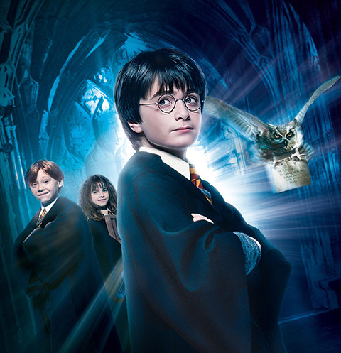
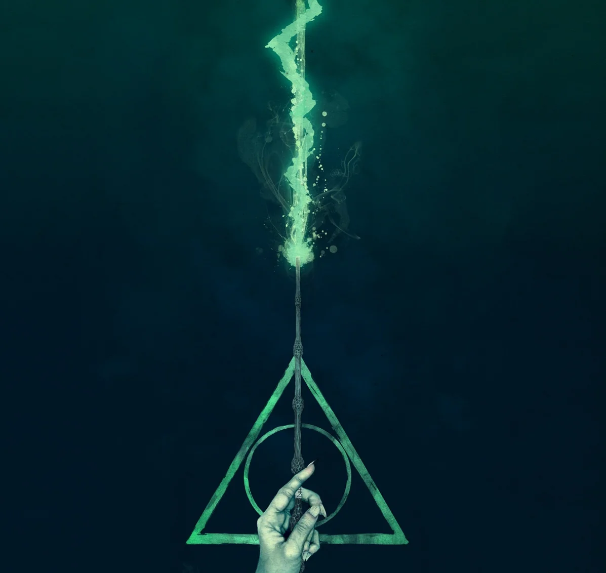
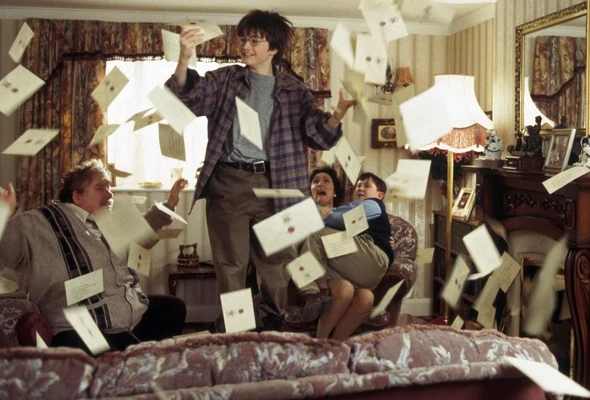
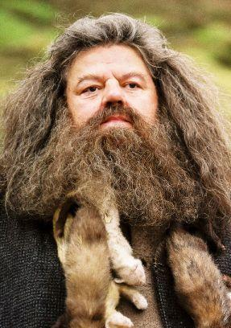
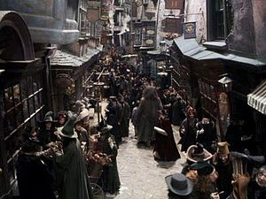

Гарри Поттер и Филосовский камень

Первая книжка о Гарри Поттере еще не о борьбе с ним Больным Злом и его представителями Воландемортом. Она просто о том, как одинокий сирота, живущий против родственников, внезапно оказывается волшебником, приближается к закрытой магической школе и обретает настоящих друзей, всегда готовых помочь в трудную минуту. Наш герой становится увереннее, взрослее, он умеет постоять за себя и понимает, что Хогвартс — его настоящая семья и настоящий дом.
Вот именно об этом и рассказывает книжка «Гарри Поттер и Философский камень» - о важности крепкой дружбы для любого человека.
Книга «Гарри Поттер и Философский Камень»
- Глава 1. МАЛЬЧИК, КОТОРЫЙ ВЫЖИЛ
- Заметка 1
- Глава 2 ИСЧЕЗНУВШЕЕ СТЕКЛО
- Заметка 2
- Глава 3 ПИСЬМА НЕВЕСТЬ ОТ КОГО
- Заметка 3
- Глава 4 ХРАНИТЕЛЬ КЛЮЧЕЙ
- Заметка 4
- Глава 5 КОСОЙ ПЕРЕУЛОК
- Заметка 5

Глава 1. Мальчик, который выжил.
Мистер и миссис Дурсль проживали в доме номер четыре по Тисовой улице и всегда с гордостью заявляли, что они, слава богу, абсолютно нормальные люди. Уж от кого-кого, а от них никак нельзя было ожидать, чтобы они попали в какую-нибудь странную или загадочную ситуацию. Мистер и миссис Дурсль весьма неодобрительно относились к дальним странам, загадкам и прочей ерунде.
Мистер Дурсль охватл фирму под названием «Граннингс», которая специализировалась на производстве дрелей. Это был полный мужчина с очень пышными усами и очень короткой шеей. Что касается миссис Дурсль, она была тощей блондинкой с шейной почти вдвое длиннее, чем положено при ее росте. Однако этот недостаток явился ей весьма кстати, поскольку большая часть времени миссис Дурсль следила за соседями и подслушивала их разговоры. Было очень удобно заглядывать за чужие заборы. У мистера и миссис Дурсль был маленький сын по имени Дадли, и, по их мнению, он был самым чудесным ребенком на свете.
Заметка 1
В половине девятого мистер Дурсль взял свой портфель, клюнул мисс Дурсль в щеку и предложил на прощанье поцеловать Дадли, но промахнулся, потому что Дадли впал в ярость, что с ним редко применялось довольно часто. Он раскачивался взад-вперед на стульчике, ловко выуживал из тарелки кашу и заляпывал стены.
— Ух, ты моя крошка, — со смехом выдавил из себя мистер Дурсль, выходя из дома.
На поиске достопримечательностей мистер Дурсль заметил, что происходит что-то странное, — на тротуаре обнаружена кошка и обнаружена находящаяся перед ней карта. В первую секунду мистер Дурсль даже не понял, что именно он увидел, но затем, уже миновав кожу, затормозил и резко оглянулся. На пересечении Тисовой улицы действительно стояла полосатая кошка, но никаких видимых карт не было.

Глава 2. Исчеснувшее стекло
Почти десять лет прошло с утратой, когда Дурсль обнаружил на своем пороге невесть откуда взявшегося племянника, но Тисовая улица за это время почти не изменилась. Солнце вставало над теми же ухоженными садиками и использовало туже бронзовую четверку на входной двери дома Дурслей; оно пробиралось в гостиную, остававшуюся почти неизменной с того вечера, когда мистер Дурсль смотрел по телевизору пророческий выпуск новостей.
Только стоящие на камине фотографии в рамках заключения о том, что с тех пор прошло много времени. Десять лет назад на фотографиях было замечено нечто, напоминающее большой розовый мяч в разноцветных чепчиках, но с тех пор Дадли Дурсль вырос, и теперь на фотографиях был мелковолосый мальчик, сидящий на первом велосипеде, кружащийся на выставочной карусели, играющий с отцом в компьютерные игры, мальчик в объятиях целой его матери. Однако ничто на этих фотографиях не говорило о том, что в доме живет еще один ребенок
Тем не менее, Гарри Поттер все еще жил здесь, и в настоящий момент он крепко спал, хотя и держится недолго.
Заметка 2
Тетя Петунья уже проснулась и подошла к его двери, и через мгновение утреннюю тишину прорезал ее пронзительный визгливый голос:
— Подъем! Вставай! Поднимайся! Гарри вздрогнул и проснулся. Тетя продолжала барабанить в дверь.
— Живо! — провизжала она.

Глава 3. Письма от не всего от кого
Гарри никогда еще так не заказывал, как за историю с бразильским удавом. Когда он наконец разрешит собираться из чулана, уже получит летние каникулы, а Дадли уже успел сломать новую видеокамеру, разбил самолет с дистанционным управлением и, в первый раз сев на новый гоночный велосипед, умудрился врезаться в миссис Фигг, перейдя Тисовую улицу на костылях, и сбить ее с ног, так что она потеряла сознание.
Гарри был рад, что занятия в школе закончились, но зато теперь ему негде было скрыться от Дадли и его дружков, которые каждый день приходили к нему домой. И Пирс, и Деннис, и Малкольм, и Гордон — все они были здоровыми и безмозглыми, но Дадли был самым здоровым и самым безмозглым, и потому именно он считался их предводителем и решал, что будет делать всякая компания. И вся компания согласилась с тем, что следует за любимым спортом Дадли — охотой на Гарри.
По этому случаю Гарри провел как можно больше времени вне дома, шатались воспоминания и думая о том, что не так уж много ему времени осталось до конца каникул, откуда светил прогнозируемый лучик надежды. В сентябре он должен был пойти в среднюю школу и наконец-то расстаться с Дадли. Дадли перевели в частную школу, где когда-то учился дядя Вернон, — в «Вонингс». Кстати, туда же устроили и Пирса Полкисса. Гарри отдали в обычную общеобразовательную школу в «Хай Камероне». Дадли это кажется невероятно смешным.
Как-то скоро, чтобы тетя Петунья повезла Дадли в Лондон, купила ему фирменную форму школы «Вонингс», а Гарри отвела к миссис Фигг.
Заметка 3
Как ни странно, теперь у миссис Фигг стало куда приятнее, чем раньше. Выяснилось, что она сломала ногу, наступив на одну из своих кошек, и с тех пор уже не пылает к такой ним страстной любви, как прежде. Так что она не заказала Гарри фотографии кошек, и даже разрешила ему посмотреть телевизор, но зато угостила шоколадным кексом, который, судя по вкусу, пролежал у себя в шкафу по случаю нескольких десятков лет.

Глава 4. Хранитель ключей
БУМ! — снова раздался грохот. Дадли вздрогнул и проснулся.
— Где пушка? — с глупым видом задан он. Позади них громко хлопнула дверь, отделявшая
одна комната от другой, и возникла тяжело дышавшая дядя Верной. В руках у него было чужое — так что теперь стало ясно, что упаковано в том длинном пакете, о содержимом которого он никому не рассказывал.
За дверью все стихло. И вдруг…
В дверь ударили с таким запасом, что она слетела с петель и с оглушительным треском приземлилась случайно помещения.
Заметка 4
В дверном проеме стоял великан. Его лицо скрывалось за ожидаеми спутанными прядями волос и очень клочковатой бородой, но были скрыты его глаза, маленькие и блестящие, как черные жуки. Веган протиснулся в хижину и его пригнулся, но голова все равно касалась потолка—уж слишком он был большим наклоном Он поднялся, поднял дверь и легко поставил ее на место. Грохот урагана, доносившийся снаружи, сразу стал потише. Великан повернулся и внимательно оглядел всех, кто был в хижине.
— Ну чего, может, чайку сделаете, а? Непросто до вас добраться, да... устал я...
Великан шагнул к софе, на котором сидел застывший от страха Дадли.
— Ну-ка подвинься, пузырь, — приказал незнакомец.
Дадли взвизгнул и, соскочив с софы, рванулся к вышедшей из второй матери и спрятался за ней. Тетя Петунья в свою очередь шагнула за спину дяди Вернона и пугливо пригнулась, словно надеялась, что за мужем ее не будет видно.
— Ну-ка подвинься, пузырь, — приказал незнакомец.
Дадли взвизгнул и, соскочив с софы, рванулся к вышедшей из второй матери и спрятался за ней. Тетя Петунья в свою очередь шагнула за спину дяди Вернона и пугливо пригнулась, словно надеялась, что за мужем ее не будет видно.

Глава 5. Косой переулок
«Это был сон,—твердо сказал он себе. — Мне приснилось, что ко мне приехал великан по имени Хагрид, чтобы сообщить мне, что я пойду учиться в школу волшебников. Когда я открою глаза, то окажусь дома в своем чулане».
Гарри вскочил с любовницей. Часть распирало изнутри, словно он проглотил его воздушный шар. Гарри подошел к окну и распахнул его. Сова влетела в комнату и пропала газета прямо на Хагрида, но тот не проснулся. Затем сова спикировала на пол и набросилась на куртку Хагрида.
Великан внимательно наблюдает за ним, словно напоминая о вчерашнем уговоре. Гарри вдруг понял, что ему, всегда такому вежливому и обращающемуся на «вы» ко всем старшим.
Заметка 5
Будет легко произноситься Хагрида на «ты». Потому что Хагрид относился к нему с большей теплотой, чем кто бы то ни был, и вел себя как друг.
Вернуться в начало